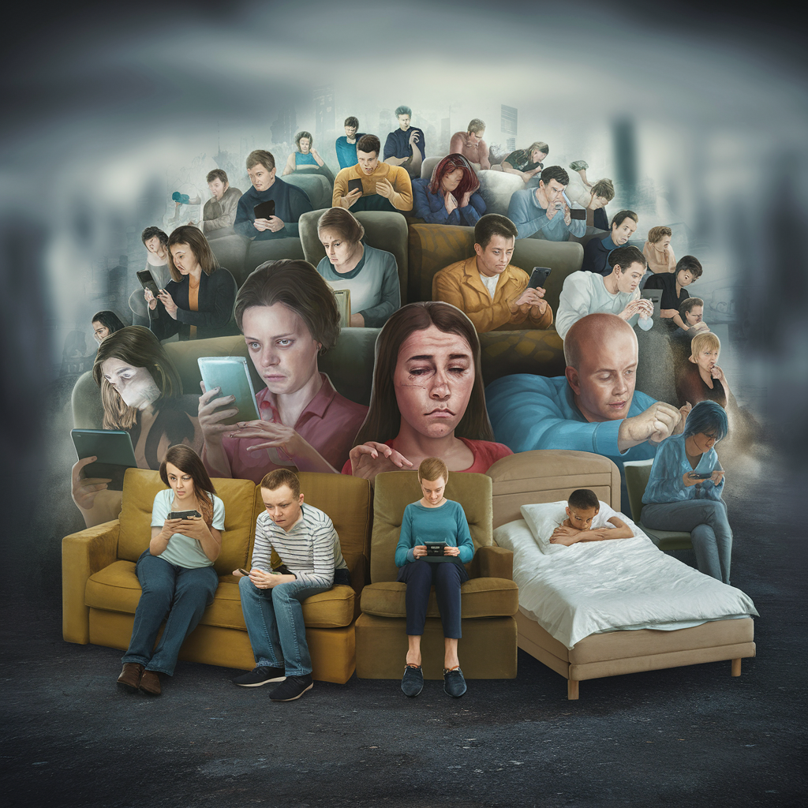
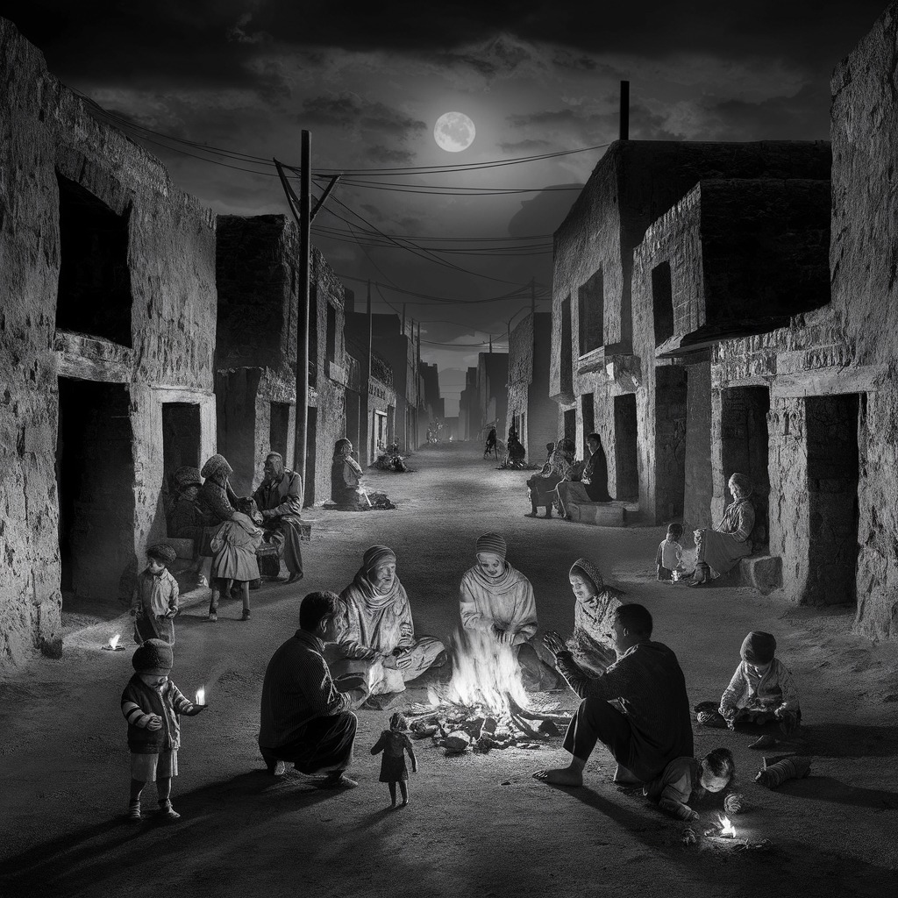
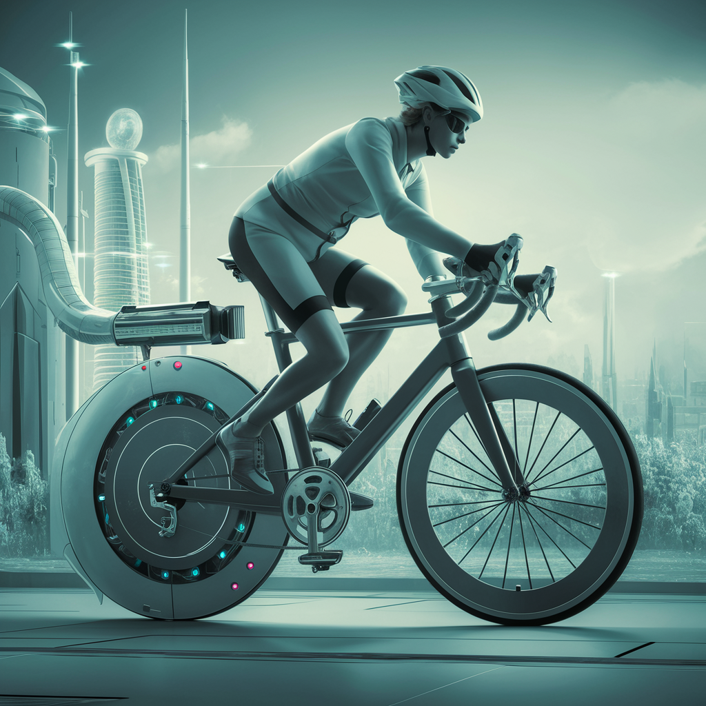
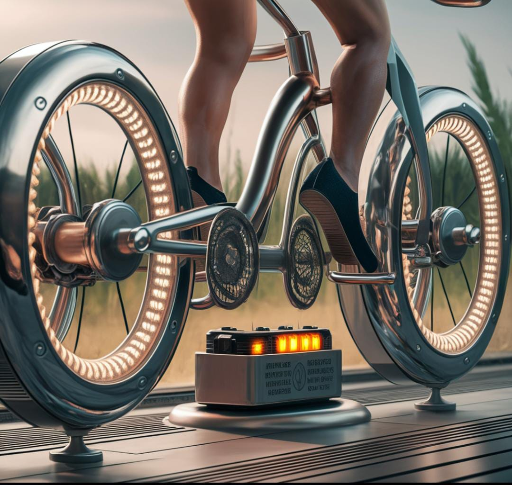
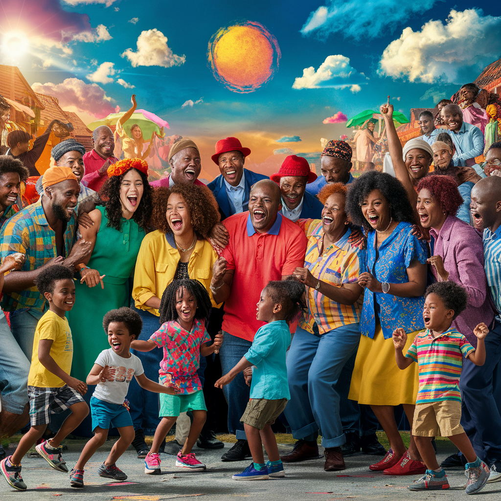
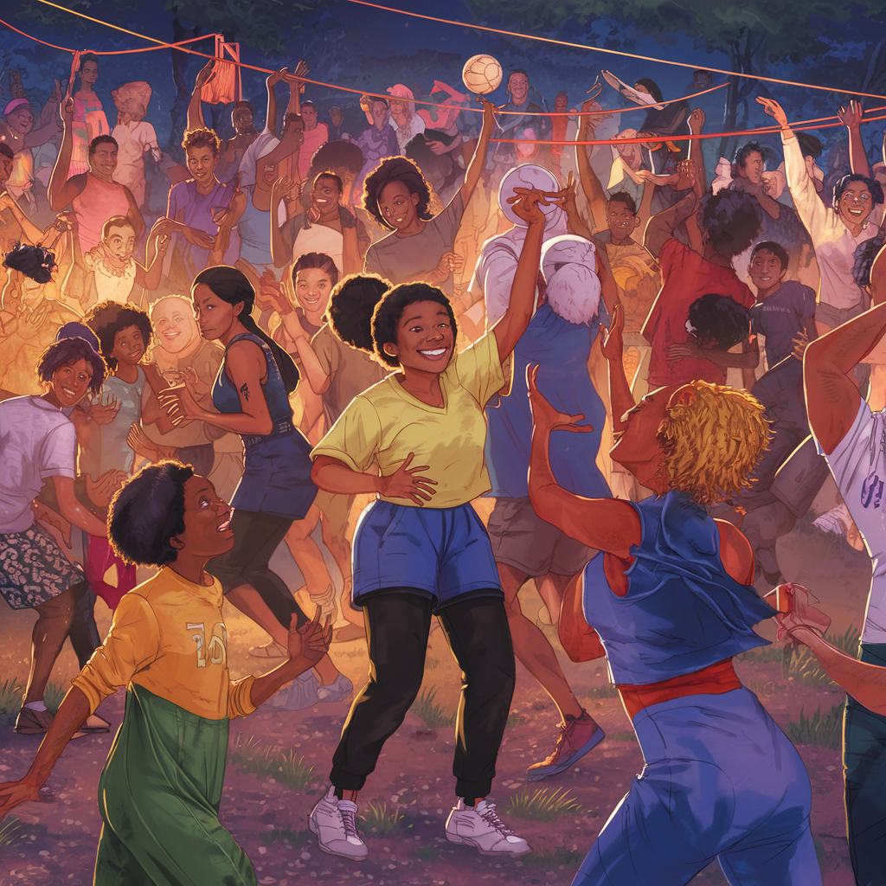
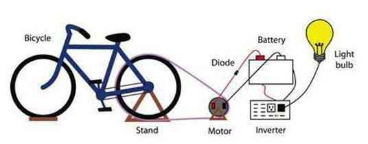

EnerGhram
¿Cuál es el problema identificado?
La falta de energia electrica renovable en la comuniadad de Huaycán, una situacion lamentable y desafortuna para muchos ciudadanos, esta situacion da muchas consecuencias graves como una educacion inadecuada, desigualdad, aislamiento social y otros. Por otro lago la falta de ejercicio fisico, lo cual con este proyecto se estaria empleando como problema secundario, y junto a ejercer la actividad fisica a la recreacion y mantenerte ocupado en los tiempos libres en algo productivo.


¿En qué consiste el proyecto?
Consite en un mecanismo confotmado por pedales conectados a un mot, una bateria y un inversornpara asi conectarlo a un dispositivo de almacenamiento de energia, todo inicia gracias al movimiento de los pedales que hace girar una ruedita y la mantiene en constante movimiento, a lo que el motor capta el movimiento y la covierte en energia con ayuda de la bateria, liego el inversor la ordena y regula para que sea utilizable y no haya un corto circuito debido a la mala regulación de energia.


¿A quién beneficia el proyecto?
En general este proyecto va dirigido a la gran mayoria de la población ya te genera eneria electrica y a la vez te proporcina salud fisica, pero principalmente va dirigido a los publicos que carecen de el recurso de la energia electrica, y asi generar energia electrica renovable de una forma eco-amigable. El uso de este mecanismo es muy importante y eficaz para la poblacion, te da energia electrica y proporciona salud física.


Paso a paso del proyecto
En la parte superior del soporte va a ver un disco pequeño que va a estar en constante movimiento gracias a los pedales, eso va a estar vinculado a un motor que va a percibir el movimiento y lo va a pasar a la batería que se va a encargar de transformarlo en energía eléctrica. Ahora la batería va a estar conectada al inversor que va a ordenar la energía y regularla para que sea funcional para la batería que la va a acumular.

Cambiar Color de Fondo